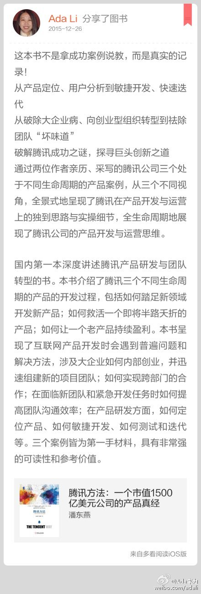
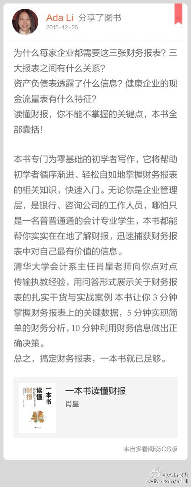
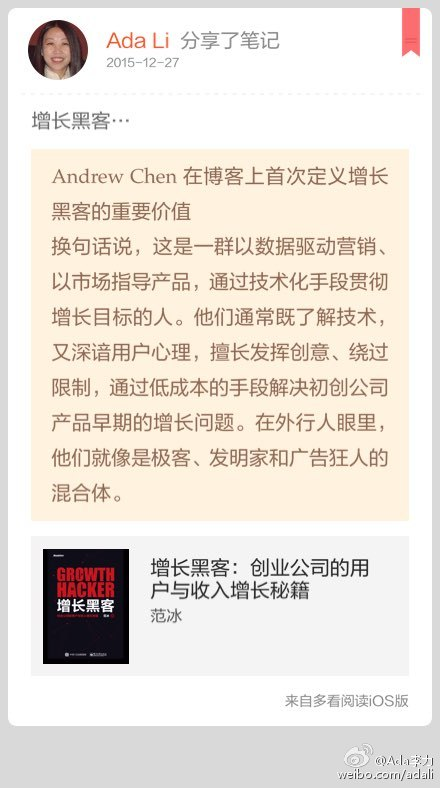

回复@前端早读课:觉得前两个案例有些神话敏捷开发和教练的作用，大概是因为作者之一就是敏捷教练吧。//@前端早读课:是本好书，里面谈到敏捷开发模式@Ada李力:#读书#《腾讯方法》 讲了三个项目事例，可参考的地方很多。比如手游项目成功的关键是招来牛人，开掉不称职的项目负责人；社交游戏中从copy到原创，以及面对面沟通对团队士气和信息透明的重要性；腾讯会员制从按条收费的内容模式，转变为包月的人群模式，极大拓展了收费空间，以及会员部门的话语权。 
回复@谷歌不要退出中国:是的//@谷歌不要退出中国:这个肖星是清华那个开mooc的肖星吗？@Ada李力:#读书#《一本书读懂财报》 有切实需求的时候读书最快。这本会计入门书看得津津有味，比如，刚看到营业税和增值税，讲得非常清楚又浅显易懂。 网页链接 
#创业#后，发现看不太懂的领域也清晰了些。比如炒股这件事情，以前不知道股票为什么涨，为什么跌。现在至少知道这几点: 1. 好企业非常重要的是领导团队 2.在处于上升期的行业发现好企业要容易的多 3.罗马不是一天建成的，好企业需要时间走出来 4.财报是量化后的企业 5.好企业对应好股票。
回到创业领域，我也相信这么几件事儿。1. 创业要找到风口，就是处于上升期的行业。2. 是否成功关键看团队 3. 当创业这事儿坚持得时间越长，成功概率就越大 4. 业绩都拿数据来说话 5.市场是杆秤，长期看也是精准的秤。创业是否成功的最大评判者是市场。@Ada李力:#创业#后，发现看不太懂的领域也清晰了些。比如炒股这件事情，以前不知道股票为什么涨，为什么跌。现在至少知道这几点: 1. 好企业非常重要的是领导团队 2.在处于上升期的行业发现好企业要容易的多 3.罗马不是一天建成的，好企业需要时间走出来 4.财报是量化后的企业 5.好企业对应好股票。
批准和审核票据是两个环节。直属老板批准报销费用，财务部门审核并放款。 //@用心阁:外企的中国公司都无权批准报销？@Ada李力:创业后才实现了报销当天拿回报销款 | 李力(Ada Li)的博客 网页链接
增长黑客…//#多看笔记# “Andrew Chen在博客上首次定义增长黑客的重要价值 换句话说，这是一群以数据驱动营销、以市场指导产品，通过技术化手段贯彻增长目标的人。他们通常既了解技术，又深谙…” 摘自《增长黑客：创业公司的用户与收入增长秘籍》 @多看阅读 网页链接 